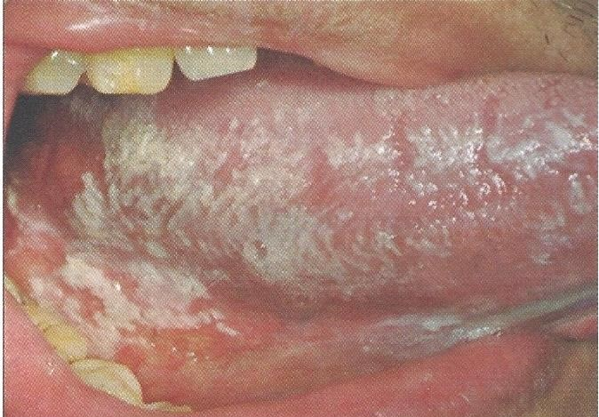

Pseudomembranous candidiasis
โรคราแคนดิดาชนิดเยื่อเทียม
เกิดจากการติดเชื้อรา Candida albicans
พบได้ที่เยื่อเมือกช่องปากทุกตำแหน่ง เป็นคราบสีขาวคล้ายนมข้น เช็ดหลุดออกง่าย
อาการ แสบร้อน การรับรสที่ผิดปกติ รู้สึกมีคราบหนาภายในช่องปาก
พบในผู้ป่วยเบาหวาน การขาดสารอาหาร การติดเชื้อไวรัส HIV